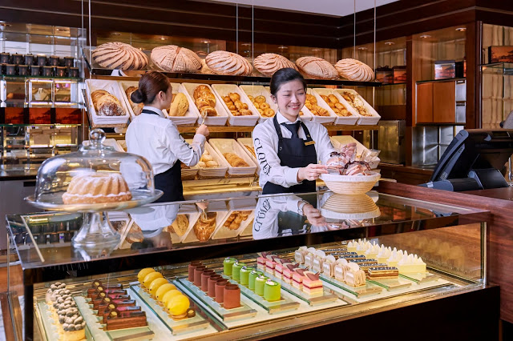

QUEM SOMOS
Padaria ou panificadora é um comércio (geralmente também é indústria, salvo casos nos quais os proprietários vendem somente produtos terceirizados) de grande popularidade em vários países. Em sua grande maioria, são empresas de pequeno porte, mas vários empresários estão investindo, para poderem ser conhecidos como Grandes Casas.